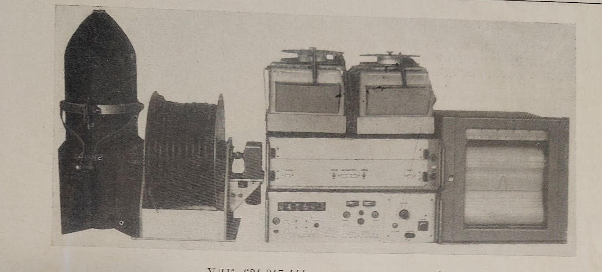

Протонный аэромагнитометр ЯМП-2
Разработчики: В. А. Реут, Ф. Н. Свядищ, С. Я. Квитко, П. Н. Гринчук, С. Жанакбаев, В. Ф. Власов
За справками следует обращаться по адресу: 480716, Алма-Ата, Красногвардейский тракт, 89-а, завод «Казгеофизприбор».
Нижній блок з цифровим табло являє собою частотомір частоти прецесії, розроблений мною, П. Н. Гринчук.
8. Цифровий фільтр для морського гравіметра
Після успішної розробки Протонного аеромагнітометра ЯМП-2 і демонстрації його на виставці геофізичних приладів і комплексів на ВДНХ в Москві, мене в КБ "Казгеофизприбор" атестували і присвоїли професійний рівень інженер-конструктор другої категорії, а нашому відділу запропонували розробку цифрового фільтра для морського гравіметра. З цією пропозицією звернулась група вчених геофізиків Московського Институту Геофізики під керівництвом доктора наук Іванкіна.
Що таке морський гравіметр?
Тепер я повинен пояснити що таке морський гравіметр. Взагалі геофізичними гравіметрами вимірюють значення сили земного тяжіння в даній точці Землі. Для цього використовують різні принципи. Один із цих принципів використовує коливання струни в магнітному полі, так звані "струнні гравіметри". Справа в тому, що частота коливання струни в магнітному полі залежить від сили прискорення яке діє на струну. Перевага струнних гравіметрів у тому, що вимірювання сили тяжіння зводиться до вимірювання частоти коливання струни. А це вимірювання можна здійснити з високою точністю. В струнному гравіметрі міститься струнний генератор. Конструкція струнного генератора включає невеликий відрізок стальної струни натягнутої невеликим грузом і розміщеної між полюсами магніта. На магніті намотана котушка з тонкого мідного дроту. Електронна схема струнного генератора сконструйована так, що в ній виникають неперервні коливання. В результаті коливання стальної струни в магнітному полі, в котушці виникає змінний електричний сигнал частота якого зв'язана з силою земного прискорення (тяжіння) "g". Вимірюючи частоту коливання струни частотоміром і знаючи залежність між частотою коливання і силою земного прискорення (тяжіння), можна виміряти "g".
Якщо говорити про конструкцію морського гравіметра в цілому, то це складна конструкція в якій струнний генератор стабілізується по температурі електронним термостабілізатором, до сотих долей градуса, а положення його в просторі стабілізується гіроскопічною системою, так званою гіроплатформою. Морський гравіметр сигнал якого нам потрібно було обробляти повністю сконструйований і виготовлений групою московських геофізиків. На наш цифровий фільтр поступав тільки сигнал частоти струнного генератора з виходу гравіметра.
Мої розробки частотоміра для Протонного аеромагнітометра ЯМП-2 виявились дуже необхідними і для Морського струнного гравіметра. Тому саме до КБ "Казгеофизприбор" звернулись московські геофізики. Хочу зауважити, що вимірювання гравітаційного поля Землі в той час було дуже актуальним у зв'язку з тим, що наведення балістичних ракет по гравтаційному полю набагато надійніше ніж по магнітному. Магнітне поле землі нестабільне порівняно з гравітаційним. Тому в той час в СРСР велись засекречені роботи по скануванню гравітаційного поля Землі саме з метою складання детальної карти гравітаційного поля по якому можна було наводити міжконтинентальні балістичні ракети. Група московських геофізиків була учасниками цих робіт.
Морські гравіметри встановлюються на морських суднах. Це значно ускладнює вимірювання гравітаційного поля струнними гравіметрами на плавучих платформах. Справа в тому, що на струну діє як граітаційне прискорення, так і прискорення за рахунок коливань плавучої платформи на морських хвилях. Причому, при штормах це прискорення в тисячі разів більше ніж прискорення за рахунок гравітаційного поля. Як виділити той слабий сигнал гравітаційного поля з тисячекратного хаосу коливань морських хвиль? Виявляється вихід є! Це цифрова фільтрація частоти струнного гравіметра. Справа в тому що корисний сигнал змін гравітаційного поля по курсу судна складає тисячні - соті долі герца (в залежності від швидкості судна по курсу), а зміна частоти струнного гравіметра за рахунок прискорень дії морських хвиль складають одиниці - десяті долі герц. Таким чином потрібно відсікти корисну складову частоти гравіметра від тисячекратних збурень за рахунок дії морських хвиль. Математичні розрахунки і моделювання на ЕВМ показали що для цього потрібен цифровий фільтр 10-го порядку!
Ідеологом такого фільтра став кандидат наук (на той час, 1975 рік), з групи московських геофізиків Стакло Анатолій Вацлавович. Ідея полягала в тому, що мій частотомір щосекунди буде вимірювати значення частоти струнного гравіметра. Далі це значення передається в цифрову пам'ять. В цифровій пам'яті накопичується 100 таких показань на протязі 100 секунд, а потім обчислюється середнє значення за 100 секунд. Це середнє значення за 100 секунд запам'ятовується. Таким чином "вікном" в 100 секунд зглажуються наступні виміри частоти, які представляють зглажені значення прискорень гравіметра. З алгоритму роботи фільтра випливає, що в електроніці цифрового фільтру повинні бути цифрові арифметичні блоки додавання, ділення цифрових данх. На той час (1975 рік) такі мікросхеми нам були не доступні. Обдумуючи як реалізувати такий алгоритм на доступній нам елементній базі, я запропонував наступну структуру цифрового фільтра для струнного морського гравіметра. Імпульси частоти генератора струнного гравіметра подаються на вхід багатокаскадного двійкового лічильника частоти, ємність якого в 128 разів (для зручності) більша ніж значення одного максимального відліку частотоміра. Ці імпульси накопичуються в лічильнику на протязі 128 замірів, тобто на протязі 128 секунд. Тобто, в лічильнику накопичується сумарне число імпульсів на протязі 128 секунд. Далі з лічильника код перезаписується в регістр зсуву вправо. Тепер легко знайти середнє значення частоти струнного генератора за 128 секунд шляхом зсуву регістра на 7 розрядів вправо (фаховому інженеру з цмфрової техніки це зрозуміло). Старші розряди регістра зсуву являють собою середнє значення частоти струнного генератора за 128 секунд. Таким чином девіація частоти струнного гравіметра зглажується (осереднюється) "вікном" в 128 секунд. Більш того, ці операції осереднення виконуються в двійковому лічильнику і регістрі зсуву щосекунди. Тобто, "вікно" замірів "ковзає" безперервно по замірах частоти. Таким чином в старших розрядах регістра зсуву ми одержуємо щосекунди середнє значення частоти струнного генератора на інтервалі в 128 секунд. Старші розряди регістра зсуву являють собою вихід даного цифрового фільтра. Девіація частоти на виході такого цифрового фільтра зменшується порівняно з девіацією частоти на вході фільтра (двійкового лічильника). Цей алгоритм описує роботу одного каскаду такого цифрового фільтра. Він являє собою цифровий фільтр першого порядку. В блоці повного цифрового фільтра струнного морського гравіметра використано 10 таких каскадів. Фільтр реалізовано на мікросхемах 134 серії (мало споживає струму), які розміщені на друкованих платах. Таких плат в повному блоці цифрового фільтра десять. Плати з'єднані між собою каскадно. Тобто, інформація з виходу попередньої плати подається на вхід наступної. В теорії цифрових фільтрів один каскад такого фільтра називається фільтром нижніх частот (ФНЧ) першого (1-го) порядку. А всі десять каскадів реалізують ФНЧ фільтр 10-го порядку. Такий фільтр має дуже вузьку полосу пропускання і крутий схил затухання. Всі вхідні частоти які більше 0.01Гц будуть подавлені. В полосі пропускання залишається тільки корисний сигнал повільних змін гравітаційного поля по ходу руху судна по курсу.
З виходу останнього 10го каскаду фільтра код старших 8 розрядів регістра зсуву подається на 8-розрядний цифро-аналоговий перетворювач і через підсилювач подається на вхід аналогового самописця, який в наглядному вигляді записує чорнилом на папері графік змін гравітаційного поля по курсу ходу судна. Паралельно цифрові дані фіксуються на стрічковому перфораторі ПЛ-80 в коді ЕВМ "МІНСЬК-32" для наступної побудови карт гравітаційного поля планшетним "АТЛАС-2" (який теж серійно випускався заводом "Казгеофизприбор") в стаціонарних умовах геофізичної партії.
Найбільш цікавим етапом цієї розробки були морські випробовування дослідного зразка Морського струнного гравіметра на Чорному і Балтійському морях у 1977-1978 роках. Морський гравіметр був укомплектований нашими блоками: описаним цифровим фільтром, блоком живлення, блоком керування, самописцем і перфоратором ПЛ-80. Цей комплекс встановлювався на риболовних сейнерах на Чорному морі і науково-дослідному судні "Академік Курчатов" на Балтійському морі. Морські випробовування підтвердили ефективність і характнристики нашого фільтра, і можливість в реальному часі вимірювати значення земного гравітаційного поля по ходу курсу судна. Раніше це не можливо було зробити в польових умовах. Для цього дані частотомірів записувались на перфоровану стрічку або магнітну стрічку на судні. Далі ці дані доставлялись на обчислювальний центр геофізичної партії або Інституту. За сезон морських геофізичних досліджень цих даних накопичувалось дуже багато. Після закінчення сезону збору даних обробка цих даних На ЕВМ продрвжувалась місяцями. Геофізики одержували результат своїх польових досліджень з великим запізненням. Коефіцієнт корисної роботи для геофізиків був дуже низьким і повільним. Наша розробка давала в руки геофізиків ефективний інструмент, який в реальному часі і наглядно показував значення і зміни гравітаційного поля по курсу судна.
Про важливість і цінність цієї розробки для геофізиків свідчить розмір премії розробникам в кінці етапу успішної здачі "Цифрового фільтра" - 20000 рублів! При наших зарплатах в 120 -200 рублів це була грандіозна для нас премія. Крім того цей цифровий фільтр захищено авторським свідоцтвом СРСР № 638969 від 28 серпня 1978 року.

ПОВЕРНЕННЯ В УКРАЇНУ
Життєві обставини 1978 року заставили мене з родиною повернутись з Казахстану в Україну. Я давно мріяв про це. На той час моя сім'я - це я, дружина і донечка Алла якій вже виповнилось 7 років. Повернулись ми в рідне місто Чернівці, де проживала наша рідня. В Чернівці ми переїхали шляхом обміну квартир. Так що жити у нас було де. Встало питання де працювати. На той час в Чернівцях вже відкрили декілька заводів мікроелектронного і приладобудівного профілю, в тому числі завод "Електронмаш". При заводі "Електронмаш" було Спеціальне Конструкторсько Технологічне Бюро (СКТБ ВТ) обчислювальної техніки. В серпні 1978 року я влаштувався в СКТБ ВТ на посаду інженера-конструктора першої категорії з окладом 140 рублів. Такий тоді був рівень оплат роботи інженера.